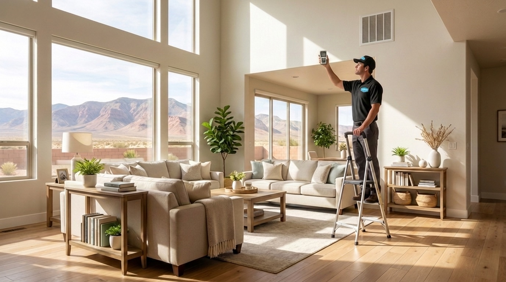
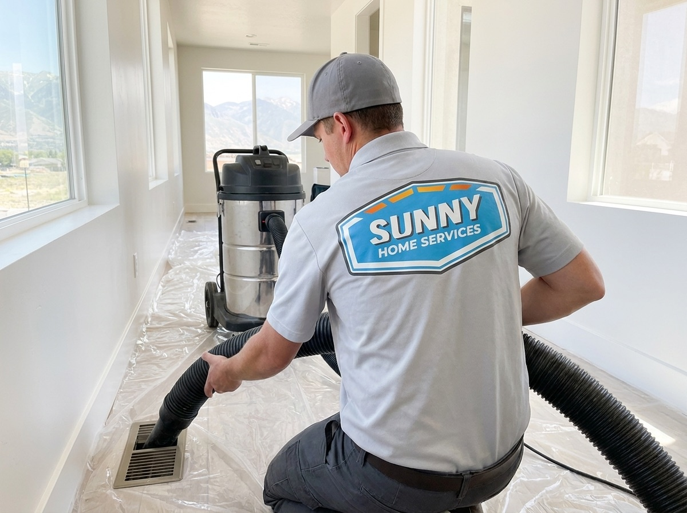

385.853.8116


Sunny Home Services’ air duct cleaning on the Wasatch Front clears out the dust, debris, and allergens that build up inside your ductwork and circulate through every room. Along the Wasatch Front, fine valley dust and pollen work their way into return ducts and settle deep in the system where a filter alone can’t reach.
When ducts are packed with buildup, your HVAC works harder, your air feels stale, and dust resettles on surfaces days after you clean. Whether you’re near Jordan Landing, Daybreak, or the neighborhoods along Mountain View Corridor, a thorough duct cleaning restores airflow and helps your home breathe easier.

Sunny Home Services’ technicians are trained, certified, and experienced in cleaning duct systems under real Wasatch Front conditions, where homes collect dust and dry-air debris faster than most.
On the Wasatch Front, that translates into a few very specific reasons ducts fill up quickly:
Because we clean duct systems in these conditions every day, we understand how Utah homes are built, how ducts are routed, and where buildup tends to hide in local systems.
If you’re searching “air duct cleaning near me”, with Sunny Home Services you’re getting a local team that doesn’t just move dust around: we clean the full system, remove what’s trapped inside, and help you keep it cleaner longer. That means fresher air, less dust on your surfaces, and an HVAC system that moves air the way it should.
Air duct cleaning on the Wasatch Front does more than freshen the air. It addresses buildup that affects comfort, efficiency, and the amount of dust you live with every day.
Utah’s dry, dust-heavy environment creates conditions where debris accumulates quickly inside ducts. Other local factors add to it: seasonal pollen, construction dust from rapid growth, and pet dander that recirculates through the system with every cycle.
Homeowners who schedule a professional duct cleaning typically notice:
On the Wasatch Front specifically, buildup shows up differently across home types:
Across the Salt Lake Valley, dust in ductwork is one of the biggest hidden drivers of poor air quality. Even a modest layer inside the system means dust gets pushed back into your living space every time the fan turns on.

Knowing when to schedule air duct cleaning on the Wasatch Front comes down to what you’re seeing, smelling, and feeling in your home, and how long it’s been since the system was last serviced.
On the Wasatch Front homes, dry air and constant dust mean ducts fill faster than the national average, so signs of buildup often show up sooner. If you’re noticing several of the signals below at once, it’s usually time to have the system professionally cleaned.
Choosing among duct cleaning companies means finding a team that does the full job, not a quick surface pass. Sunny Home Services provides the thoroughness of a large company with the personal touch and accountability of a local business.
We deliver:
On the Wasatch Front, where valley dust and dry air keep ducts loading up year-round, a proper cleaning makes a real difference in how your home feels. Systems left uncleaned recirculate the same debris and put extra strain on the blower and filter.
Unlike many air duct cleaning companies, we prioritize communication. You know who’s coming, when they’ll arrive, and exactly what work’s being done, no surprises.
Calling Sunny Home Services for local air duct cleaning means clear communication and a thorough process from the first interaction.
Here’s what happens:
Most air duct cleaning jobs are completed in a single visit because our trucks are fully equipped to clean the full system on the spot, so your home is back to fresh air the same day.

The offers from our door hanger, redeemable when you book. Mention them when you call.

If dust keeps coming back and the air feels stale, don’t wait for another allergy season. Call now or book online to clear the valley dust out of your ducts and get your home breathing easier!